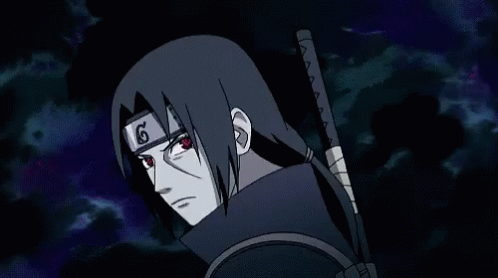
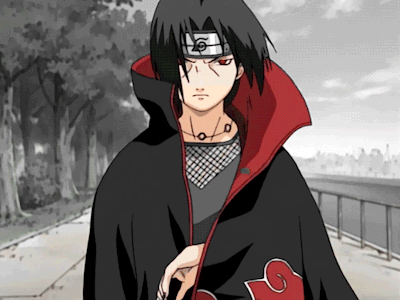
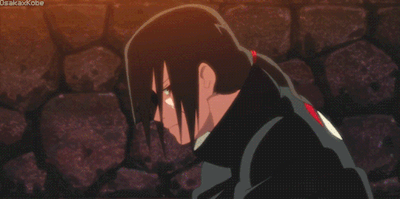
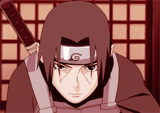

Itachi Uchiha (うちはイタチ, Uchiha Itachi) was a shinobi of Konohagakure's Uchiha clan that served as an Anbu Captain. He later became an international criminal after murdering his entire clan, sparing only his younger brother, Sasuke. He afterwards joined the international criminal organisation known as Akatsuki, whose activity brought him into frequent conflict with Konoha and its ninja — including Sasuke — who sought to avenge their clan by killing Itachi. Following his death, Itachi's motives were revealed to be more complicated than they seemed and that his actions were only ever in the interest of his brother and village, making him remain a loyal shinobi of Konohagakure to the very end.
Itachi was the first child born to Mikoto and Fugaku Uchiha. His early childhood was marked with violence: when he was four years old, the Third Shinobi World War waged and he witnessed first-hand many of the war's casualties. The death and destruction he experienced at such a young age traumatised Itachi and made him a pacifist, leading to him training non-stop to achieve his dream of becoming a ninja among ninja in order to erase fighting from the world. At age 5, after becoming a big brother to Sasuke, Itachi was approached by Shisui, who offered to train together. Soon, the two became best friends, forming a brother-like bond as they continued to teach the other new tricks. During the Nine-Tailed Demon Fox's Attack, he was home alone looking after Sasuke, followed by Itachi rescuing Mikoto from falling debris, and in the anime seeking shelter with Izumi. The Nine-Tails' attack had soured relations between Konoha's leadership and the Uchiha, the former believing the latter to be responsible. The Uchiha were relocated to the edge of the village, isolating them from the rest of the village and making it easier to monitor them.
At age six, Itachi enrolled into the Academy, where he consistently scored the highest in each subject and quickly learned any skill taught to him, resulting in him being praised as the best of his generation. After four months, his teachers unanimously agreed let him take the graduation exam early due to Itachi being more than advanced enough for genin-level, which he passed later that month. During this time, he began seriously studying the history of the world, gaining a great appreciation for it. On the day he graduated as the youngest post-war graduate, he was approached by Danzō Shimura, who assessed Itachi's thinking.
At age 11, he entered the Anbu. Itachi's accomplishments were a source of great pride for his family, his father viewing him as proof of the Uchiha's future prosperity and his brother viewing him as a model to live up to. Itachi spent a great deal of time with Sasuke, training with him (though rarely actually training him) and giving him the recognition their father did not. However, for all the attention he received, few truly understood Itachi, believing his isolation to be a result of the gap between his abilities and theirs and not his dissatisfaction with the shinobi's life of conflict. Eventually, the Uchiha's disdain for their unfair treatment led them to plan a coup d'état. Fugaku, head of the Uchiha and the coup's chief conspirator, encouraged Itachi's advancement into the Anbu's ranks as a means of spying on the village. Itachi, however, knew an Uchiha coup would lead to intervention from other villages and ultimately start another World War, something he could not support. He instead became a double agent, reporting the Uchiha's actions to the Third Hokage and the Konoha Council in the hopes it would help them find a peaceful resolution.